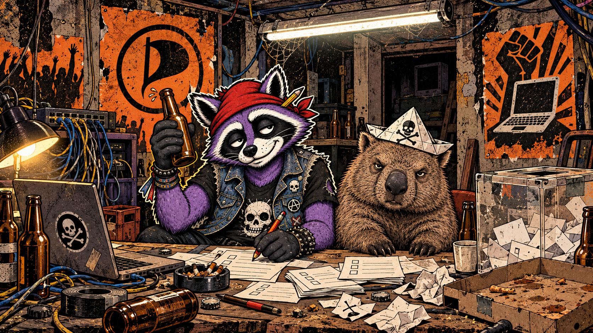

Kolumne
20 Jahre Piratenpartei: Der Wombat war nicht das Problem
Über 20 Jahre Piratenpartei, Wombats, Selbstzerlegung und politische Warnungen, die leider noch immer aktuell sind.

Die Piratenpartei wird heute zwanzig Jahre alt.
Falls ihr das nicht mitbekommen habt: Das gehört inzwischen offenbar zum Markenkern.
Am 10. September 2006 wurde die Partei in der Berliner c-base gegründet. Damals ging es um Urheberrecht, Datenschutz, freien Zugang zu Wissen und die Frage, ob der Staat wirklich jeden digitalen Furz seiner Bürger archivieren sollte. Themen, die ungefähr so massentauglich klangen wie eine Podiumsdiskussion über Linux-Treiber.
Heute streiten wir über Chatkontrolle, Gesichtserkennung, Plattformmacht und Klarnamenpflicht. Die Piraten sind politisch fast abgesoffen. Ihre Themen schwimmen leider immer noch oben.
Plötzlich saßen die da
2009 holte die Partei bei der Bundestagswahl zwei Prozent. 2011 zog sie in Berlin mit 8,9 Prozent und 15 Abgeordneten ins Landesparlament ein. Weitere Landtagseinzüge folgten.
Plötzlich saßen da Menschen in Parlamenten, die ihre Laptops aufklappten, Sitzungen streamen wollten und bei „Das haben wir schon immer so gemacht“ nicht ehrfürchtig nickten, sondern fragten:
„Warum eigentlich?“
Das war erfrischend. Nicht immer professionell, aber wenigstens war das Mischpult an.
Was nicht heißt, dass ich plötzlich Fan der repräsentativen Demokratie geworden wäre. Ich halte davon ungefähr so viel wie von einem Punkkonzert mit Sitzplatzpflicht. Für alte Haudegen mit Gehhilfe sicher genial. Aber ohne Pogo geht es halt nicht.
Ich will nicht weniger Demokratie, sondern mehr direkte Beteiligung. Ein Kreuz alle paar Jahre ist mir dafür etwas dünn. Die Piraten experimentierten mit Liquid Democracy und der Idee, politische Stimmen nicht für vier Jahre komplett an Berufspolitiker zu verleihen. Man musste dafür keine Software anbeten oder jeden Onlineantrag für den Beginn der Weltrevolution halten. Aber wenigstens rüttelte da jemand am Prinzip: Ihr wählt uns, danach übernehmen wir. Vielen Dank, bis zum nächsten Wahlplakat.
Würde ich dieses Spiel trotzdem ernst nehmen, gehörten die Piraten wahrscheinlich zu den drei oder vier Parteien, bei denen ich überhaupt überlegen müsste, wo ich das Kreuz hinsetze.
Danach müsste ich mir erst einmal die Hand waschen. Aus Prinzip.
Campino sah das 2012 deutlich anders. Er nannte die Piraten eine „chaotisierte Form der FDP“. Gleichzeitig musste selbst er ihnen zugestehen, bei der Verlagerung politischer Kultur ins Internet Vorreiter gewesen zu sein. Das ist ungefähr die politische Variante von: Eure Band finde ich scheiße, aber der Gitarrist kann was.
Den Mann muss ich dafür weder zum politischen Orakel erklären noch freiwillig die Hosen auflegen. Der Seitenhieb saß trotzdem erstaunlich ordentlich.
Ein Wombat für jeden Haushalt
Mein liebstes Piratenplakat versprach 2013 einen Wombat für jeden Haushalt. Unrealistische Wahlversprechen könnten die Piraten schließlich auch, stand sinngemäß darunter.
Politisch war das wahrscheinlich durchdachter als die Hälfte der Plakate, auf denen irgendein lächelnder Mensch vor blauem Himmel „Zukunft“ verspricht. Welche Zukunft genau, erfährt man nach der Wahl. Oder nie. Je nachdem, was zuerst eintritt.
Der Wombat war albern, aber ehrlich.
In den Bundestag brachte er die Partei natürlich nicht. Dort landeten die Piraten 2013 bei 2,2 Prozent. Stattdessen begann ein Absturz, bei dem man zeitweise das Gefühl bekam, die Partei wolle beweisen, dass Selbstzerlegung auch basisdemokratisch organisiert werden kann.
Der Erfolg hatte kluge Menschen mit verdammt wichtigen Ideen angelockt. Leider kamen auch jene, die sich selbst für das wichtigste Programm der Partei hielten.
Öffentliche Grabenkämpfe, persönliche Eitelkeiten und interne Dauerbeschäftigung rissen irgendwann den Zapfhahn an sich. Während draußen über Bürgerrechte gestritten wurde, zerlegte man drinnen die eigene Glaubwürdigkeit.
Irgendwann ging es öffentlich häufiger darum, wer mit wem nicht mehr konnte, als darum, was die Partei eigentlich verändern wollte. Das war keine finstere Kampagne der Systempresse. Dafür lieferten die Piraten selbst genug Sendematerial, teilweise frei Haus und mit Livestream.
Immerhin transparent.
Snowden, Feine Sahne und der gläserne Bürger
Es gab Momente, in denen die Piraten genau dort standen, wo ich eine Bürgerrechtspartei sehen möchte.
Nach Edward Snowdens Enthüllungen stellten sie sich politisch hinter den Whistleblower. Die Piratenfraktion im nordrhein-westfälischen Landtag beantragte einen sicheren Aufenthalt für ihn in Deutschland. Es ging nicht um persönliche Kumpanei mit Snowden, sondern um Solidarität mit einem Menschen, der staatliche Massenüberwachung sichtbar gemacht hatte.
Auch die Überschneidung mit linker Subkultur war nicht bloß Theorie. Der Arbeitskreis „Asyl und Flucht“ der Piratenpartei Hessen stand gemeinsam mit Feine Sahne Fischfilet, Irie Révoltés und vielen weiteren Gruppen unter dem antirassistischen Aufruf „Gemeint sind wir alle!“.
Das macht aus der gesamten Partei noch keine Punkband. Es zeigt nur, dass zwischen Datenschutzseminar und Gegen-rechts-Bühne durchaus eine Tür offenstand.
Genau dort fand ich die Piraten immer am interessantesten: nicht als lustige Computerpartei, sondern wenn digitale Bürgerrechte auf ganz reale Menschen trafen. Überwachung, Ausgrenzung und staatliche Willkür wohnen schließlich nicht ausschließlich im WLAN-Router.
„Gläserner Staat statt gläserner Bürger“ war einer dieser Sätze, die so einleuchtend klangen, dass man sich wundern musste, warum er überhaupt erklärt werden musste.
Zwanzig Jahre später erklären wir ihn immer noch. Die Datenberge sind größer, die Kameras schlauer und die Unternehmen dahinter reicher.
Läuft bei uns. Nur leider in die falsche Richtung.
Mein Name geht euch einen Scheiß an
Aktuell wird wieder über Klarnamen im Internet gestritten.
Bundeskanzler Friedrich Merz erklärte im Februar, er wolle wissen, wer sich online zu Wort meldet. Die Piraten lehnen eine allgemeine Klarnamenpflicht ab. Sie verweisen auf Datenschutz, Meinungsfreiheit und Menschen, die gute Gründe haben, nicht öffentlich unter ihrem bürgerlichen Namen aufzutreten.
Da bin ich ziemlich eindeutig bei ihnen.
Sobald mehr Identifizierung im Netz verlangt wird, landen Hass, Hetze, Jugend- und Kinderschutz gemeinsam auf dem Tisch. Nur sind das verschiedene Baustellen. Eine Klarnamenpflicht ist keine Alterskontrolle. Und beides ist noch lange nicht dasselbe wie gezielte Ermittlungen gegen jemanden, der einer Straftat verdächtigt wird.
Trotzdem wird alles in einen Sack gestopft, geschüttelt und anschließend als „mehr Sicherheit“ verkauft.
Hass und Morddrohungen sind keine schützenswerte Meinungsäußerung. Sexualisierte Gewalt gegen Kinder ist kein hübsches Argument für eine politische Rede, sondern ein schweres Verbrechen. Wer solche Taten begeht oder entsprechendes Material verbreitet, soll konsequent verfolgt werden.
Ich will Nazis, Stalker, Kinderficker und Leute, die anderen Menschen Morddrohungen schicken, ganz bestimmt nicht vor Strafverfolgung schützen.
Aber warum dafür vorher alle Menschen im Netz ein amtliches Namensschild tragen sollen, erschließt sich mir nicht.
Ich kann im Plattenladen schließlich auch „Burg“ heißen, ohne dass die Polizei bei einem Haftbefehl vor einem unlösbaren Rätsel steht.
Bei konkretem Verdacht gezielt zu ermitteln, ist etwas anderes, als vorsorglich die Identität aller Bürger einzusammeln.
Für politische Aktivisten, Whistleblower, von Stalking Betroffene oder Menschen, die unter ihrem echten Namen berufliche und private Konsequenzen fürchten müssen, kann ein Pseudonym verdammt wichtig sein. Der Klarnamenzwang nimmt zuerst ihnen den Schutz. Dem überzeugten Arschloch nimmt er dagegen oft nur die Mühe, sich einen Benutzernamen auszudenken.
Auf Facebook schreiben schließlich genug Leute den größten Dreck mit vollständigem Namen, Wohnort und Familienfoto daneben.
Wer glaubt, Klarnamen machten das Internet automatisch freundlich, war lange nicht mehr auf Facebook.
Urheberrecht mit Anwaltspost
Freier Zugang zu Bildung und Wissen, Netzneutralität und ein weniger absurdes Urheberrecht gehören bis heute zu den Kernthemen der Piraten.
Ausgerechnet beim Urheberrecht lieferte die Partei 2013 allerdings eine besonders deutsche Pointe. Für eine Wahlkampfgrafik verwendete sie Zeilen aus dem Ärzte-Song „Deine Schuld“. Die Anwälte der Band mahnten sie daraufhin ab.
Die Partei, die das Urheberrecht gründlich umbauen wollte, bekam wegen eines Punk-Zitats Post vom Anwalt. Mehr Deutschland passt kaum auf ein Blatt Papier.
Über einzelne Piratenforderungen kann man streiten. Die vollständige Legalisierung nichtkommerzieller Tauschbörsennutzung dürfte etwa nicht jeden Musiker spontan zum Küssen bewegen. Die Frage dahinter bleibt trotzdem richtig: Wem gehört Wissen, das mit öffentlichem Geld bezahlt wurde?
Auch beim Wahlrecht gehen die Piraten weiter als die meisten. Sie fordern, dass Menschen ab 14 bei Bundestagswahlen abstimmen dürfen.
Mit 14 ist ein Mensch in Deutschland strafmündig und religionsmündig. Der Staat traut ihm also zu, für Straftaten verantwortlich zu sein und über seine Religion zu entscheiden.
Nur bei politischen Entscheidungen, deren Folgen dieser Mensch noch jahrzehntelang ausbaden darf, heißt es:
Setz dich wieder hin. Die Erwachsenen regeln das.
Die regeln es bekanntlich hervorragend.
Vielleicht ist das der eigentliche Wert kleiner Parteien. Sie bringen Forderungen mit, die in den großen Parteiapparaten schon beim Türsteher abgegeben werden müssten.
„Tut uns leid. Mit der Idee kommst du hier nicht rein. Falsche Schuhe.“
Eine gute Idee wird nicht schlechter, weil die Partei dahinter bei Wahlen unter „Sonstige“ verschwindet. Umgekehrt wird auch kein Schwachsinn vernünftig, nur weil eine Regierungsfraktion geschlossen dafür die Hand hebt. Das sollte selbstverständlich sein. Im politischen Betrieb scheint es trotzdem regelmäßig als überraschende Neuentdeckung durchzugehen.
Gescheitert und trotzdem nicht erledigt
Die Piraten hatten nicht mit allem recht. Ihr Niedergang war auch nicht bloß das Werk böser Medien, verständnisloser Wähler oder einer finsteren Verschwörung analoger Faxgeräte.
Einen erheblichen Teil haben sie selbst hinbekommen.
Bei der Europawahl 2024 erhielten sie in Deutschland noch 0,5 Prozent und verloren ihren deutschen Sitz im Europaparlament. Für die Bundestagswahl 2025 weist die Bundeswahlleiterin bundesweit 13.800 Zweitstimmen aus. Das passt nicht mehr in ein Balkendiagramm. Das ist politische Pixelkunst.
Als große politische Kraft sind die Piraten gescheitert.
Nur ist Scheitern nicht dasselbe wie Unrecht haben. Das kennen wir aus dem Punkrock ja nur zu gut.
Zwanzig Jahre nach ihrer Gründung reden wir über Probleme, für die sie damals belächelt wurden. Wir tragen Überwachungstechnik freiwillig in der Hosentasche, lassen Plattformkonzerne unsere Debatten vorsortieren und erwägen ernsthaft, jeden Menschen namentlich zu erfassen, bevor er online den Mund aufmacht.
Die angeblichen Internet-Nerds waren vielleicht nicht regierungsfähig. Aber sie hatten verdammt noch mal Material.
Vielleicht braucht tatsächlich nicht jeder Haushalt einen Wombat.
Im Bundestag könnte einer allerdings nicht schaden.
Quellencheck: Gründungsdatum und Selbstverständnis nach der Geschichte der Piratenpartei. Das Berliner Wahlergebnis 2011 stammt von der Landeswahlleiterin Berlin; die Bundestags- und Europawahlergebnisse von der Bundeswahlleiterin. Das Wombat-Plakat und seine satirische Absicht sind im Interview mit Marina Weisband dokumentiert. Campinos Aussage von 2012: WELT/dapd. Zur Abmahnung durch die Anwälte von Die Ärzte: Berliner Zeitung und Venue. Die Unterzeichnerliste des antirassistischen Aufrufs steht bei „Gemeint sind wir alle!“. Der Snowden-Antrag findet sich beim Landtag Nordrhein-Westfalen. Aktuelle Piratenpositionen: Klarnamenpflicht, Digitalisierung und Netzpolitik, Bildung und Forschung sowie Wahlalter 14. Merz’ Forderung nach Klarnamen ist bei der Tagesschau dokumentiert. Wertungen, Wombats und beschädigtes Vertrauen in Sitzplatzdemokratie sind Burgs Meinung.